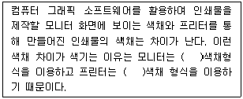
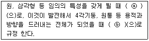
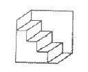
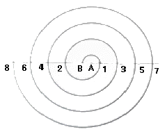

시각디자인산업기사 (2016-05-08 기출문제)
1과목: 색채학
1. 해상도는 어떠한 이미지가 스크린상에 표시될 때 세밀한 밀도의 정도를 나타내는 척도이다. 디지털색채에서 주로 사용되는 단위의 모음으로 알맞은 것은?
- DPI, PPI
- BMP, PICT
- PIXEL, VOXEL
- PDF, GIF
(정답률: 85%)

2. 무대에서 연극을 할 때 조명의 효과가 크게 작용한다. 색의 혼합 중 어떤 것을 이용하여 효과를 높이는가?
- 병치혼합
- 감산혼합
- 중간혼합
- 가산혼합
(정답률: 89%)
3. 색채계획 과정의 올바른 순서는?
- 색채계획 및 설계 → 조사 및 기획 → 색채관리 → 디자인에 적용
- 색채심리분석 → 색채환경분석 → 색채전달계획 → 디자인에 적용
- 색채환경분석 → 색채심리분석 → 색채전달계획 → 디자인에 적용
- 색채심리분석 → 색채상황분석 → 색채전달계획 → 디자인에 적용
(정답률: 44%)
4. 동일한 색상으로 배색할 경우의 느낌으로 가장 올바른 것은?
- 차분하고 안정감이 있다.
- 저채도의 경쾌감이 있다.
- 화려하고 자극적인 느낌이 있다.
- 고채도의 생동감 있는 느낌이 있다.
(정답률: 90%)
5. 일반적으로 떠오르는 빨간색의 추상적 연상과 관계있는 내용으로 맞는 것은?
- 피, 정열, 흥분
- 시원함, 냉정, 청순
- 팽창, 희망, 광명
- 죽음, 공포, 악마
(정답률: 87%)
6. 색의 3속성 중 인간의 눈이 가장 예민하게 감각하는 것은?
- 명도
- 색상
- 채도
- 색조
(정답률: 50%)
7. 색을 전달하기 위한 색의 표시방법과 관련 있는 것은?
- 먼셀 표기법
- 메타메리즘
- 유도법
- 베버와 페히너의 법칙
(정답률: 83%)
8. 색의 3속성에 대한 설명으로 가장 관계가 적은 것은?
- 색의 3속성이란 색자극 요소에 의해 일어나는 세 가지 지각성질을 말한다.
- 색의 3속성은 색상, 명도, 채도이다.
- 색의 밝기에 대한 정도를 느끼는 것을 명도라 부른다.
- 색의 3속성 중 채도만 있는 것을 유채색이라 한다.
(정답률: 87%)
9. 먼셀 표색계 10가지 기본 색상에 해당되는 않는 것은?
- Red Purple
- Blue
- Yellow Blue
- Green
(정답률: 73%)
10. 먼셀 값을 표기할 때 H V/C로 표시한다. H, V, C가 각각 뜻하는 것은?
- H : 채도, V : 명도, C : 색상
- H : 색상, V : 명도, C : 채도
- H : 명도, V : 색상, C : 채도
- H : 색상, V : 채도, C : 명도
(정답률: 86%)
11. 다음 혼색이론에 관한 설명 중 잘못된 것은?
- 가법혼색의 3원색은 빨강(Red), 녹색(Green), 파랑(Blue) 이다.
- 가법혼색의 3원색을 동시에 혼합하면 백색광 (white)이 된다.
- 감법혼색의 3원색은 노랑(Yellow), 녹색(Green), 마젠타(Magenta) 이다.
- 인쇄의 망점인 색점은 감법혼색과 동시에 병치혼색도 응용되고 있다.
(정답률: 72%)
12. 오스트발트의 색채조화론에 해당되지 않는 것은?
- 등백계열의 조화
- 등흑계열의 조화
- 등순계열의 조화
- 등차계열의 조화
(정답률: 66%)
13. 저드(D.B. Judd)의 색채 조화론의 '친근성'의 원리에 대한 내용으로 틀린 것은?
- 숙지의 원리라 하며 보는 사람에게 익숙한 배색은 조화한다는 의미이다.
- 자연을 색채 조화론의 지표로 하는 베졸트, 브리케, 루드 등의 주장과 공통된다.
- 오스트발트 색체계에서의 셰도우(shadow)의 시리즈는 그 대표적인 예이다.
- 색 공간 내부의 규칙적인 선이나 원 위에서 선정된 어떠한 색도 조화한다는 원리이다.
(정답률: 49%)
14. 다음 ( )에 들어갈 내용을 순서대로 맞게 짝지은 것은?

- HVC - RGB
- RGB - CMYK
- CMYK - Lab
- XYZ - Lab
(정답률: 93%)
15. 색상에 흥분감을 줄 수 있는 색의 특징은?
- 난색계열의 고채도 색
- 난색계열의 저채도 색
- 한색계열의 고채도 색
- 한색계열의 저채도 색
(정답률: 84%)
16. 문자, 기호 또는 도형이 얼마나 쉽게 읽히는가 하는 능률의 정도를 무엇이라 하는가?
- 시인성
- 유목성
- 가독성
- 명시성
(정답률: 68%)
17. 오스트발트의 등색상 삼각형에서 등흑계열의 조화에 해당하는 것은?
- pn - pi - pe
- ec - ic - nc
- ca - ge - li
- gc - lc - lg
(정답률: 44%)
18. 다음 중 중간 온도의 느낌을 주는 중성색은?
- 보라색
- 파란색
- 주황색
- 청록색
(정답률: 66%)
19. 다음 제품 색채에 관한 내용 중 틀린 것은?
- 유행색은 주기적으로 바뀌는 경향이 있다.
- 색채디자인에서 시장조사는 필수적이다.
- 소비자가 원하는 이미지를 색채로 나타내는 것이 좋다.
- 제품의 기능은 색채와 관계가 없으므로 그 시기에 유행하는 색을 선택하면 된다.
(정답률: 92%)
20. 색채계획의 목표와 관련이 가장 먼 것은?
- 다른 회사의 제품보다도 특색 있도록 한다.
- 제품의 기능적 우수함이 표현되도록 한다.
- 제품에 의하여 기분 좋은 생활환경이 만들어 질 수 있도록 한다.
- 기계공학적 제품의 기능향상이 되도록 한다.
(정답률: 76%)
2과목: 인쇄 및 사진기법
21. 다음 잉크 중 점도가 가장 낮은 것은?
- 플렉소용 잉크
- 신문용지용 잉크
- 볼록판용 잉크
- 평판용 잉크
(정답률: 43%)
22. 가시광선의 파장 범위로 옳은 것은?
- 180 ~ 200nm
- 200 ~ 270nm
- 380 ~ 780nm
- 800 ~ 920nm
(정답률: 87%)
23. 사진 필름의 감광재료에 사용되는 할로겐화은 중 분자량이 가장 크고 황색 및 섬아연광형 결정을 가진 것은?
- 플루오르화은
- 염화은
- 브롬화은
- 요오드화은
(정답률: 30%)
24. 다음 중 문자의 크기가 전혀 다른 것은?
- 1/4mm
- 1 급
- 1 치
- 1 Point
(정답률: 63%)
25. 식물성 기름을 불완전 연소시켜 얻은 무기안료로서 색상이 뛰어난 안료는?
- 퍼머넌트 그린
- 벤지딘 옐로
- 카본블랙
- 리솔레드
(정답률: 48%)
26. 잉크가 인쇄판을 통과하여 인쇄되는 대표적인 공판 인쇄 방식은?
- 볼록판인쇄
- 평판인쇄
- 오목판인쇄
- 스크린인쇄
(정답률: 57%)
27. 제책 시 속장을 실로 꿰매는 방법은?
- 양장
- 호부장
- 중철
- 풀매기
(정답률: 58%)
28. 컬러 네거티브 필름을 구성하는 유제층 속에 청색광이 다음 유제층에 영향을 주지 못하도록 흡수처리한 층은?
- Yellow 필터층
- Blue 감광층
- Green 감광층
- 할레이션방지층
(정답률: 64%)
29. 형광등 아래에서 컬러 사진을 촬영할 때 형광등의 녹색광을 제거하기 위한 필터는?
- PL 필터
- SL 필터
- FL 필터
- CC 필터
(정답률: 43%)
30. 필름에 표시된 감광도에 있어서 ASA란 무엇인가?
- 독일 공업 규격
- 미국 표준 규격
- 일본 사진 학회
- 아시아 표준 규격
(정답률: 47%)
31. 조리개 수치와 셔터 수치가 필름에 기록되는 빛의 양이 같은 것은?
- 1/60초 f/5.6 = 1/125초 f/5.6
- 1/60초 f/5.6 = 1/125초 f/4
- 1/30초 f/8 = 1/125초 f/5.6
- 1/125초 f/4 = 1/500초 f/4
(정답률: 49%)
32. 다음 중 버닝(Burning)에 대한 설명으로 옳은 것은?
- 기본 노출 후 사진의 일부에 빛을 더 주어 어둡게 만드는 것이다.
- 기본 노출 중에 빛의 일부를 가려서 사진의 일부분을 밝게 하는 것이다.
- 물체는 확대 렌즈의 아래에 대고 밝게 하고자 하는 부분에 빛이 닿지 않도록 하는 것이다.
- 확대 렌즈에 물체를 가까이 할수록 그림자는 작아지고 빛이 확산 및 축소된다.
(정답률: 65%)
33. 사진제판법을 바탕으로 하는 오목판 인쇄방식으로 다색 인쇄물일 때는 색채가 매우 풍부하지만 다른 인쇄방식보다 강한 인쇄압력이 필요한 방식은?
- 오프셋인쇄
- 볼록판인쇄
- 그라비어인쇄
- 스크린인쇄
(정답률: 80%)
34. 컬러 네거티브 필름에서 맨 윗층 발색층에 해당되는 것은?
- cyan
- magenta
- yellow
- green
(정답률: 53%)
35. 다음 중 건축사진 촬영에 관한 설명으로 가장 거리가 먼 것은?
- 건물과의 거리적인 조건을 만족시키기 위해 렌즈 교환 방식 카메라가 편리하다.
- 왜곡을 수정하기 위해 무브먼트가 필요한 경우가 있다.
- 가장 표준적인 표준렌즈만 필요하다.
- PC 렌즈가 유용하게 사용될 수 있다.
(정답률: 87%)
36. 현상 작용이 급격히 이루어지는 것을 막고, 포그(fog)가 발생되지 않도록 사용하는 현상 조제약은?
- 촉진제
- 보항제
- 현상주약
- 억제제
(정답률: 42%)
37. 전자 편집과 관련된 용어와 가장 관계가 없는 것은?
- CTS(Computerized Typesetting System)
- DTP(DeskTop Publishing)
- CAE(Computer Aided Editing)
- CPU(Central Processing Unit)
(정답률: 68%)
38. 대형카메라의 무브먼트(movement)에 대한 설명으로 가장 거리가 먼 것은?
- 라이즈(rise) : 카메라의 앞, 뒤판을 위로 올리는 것
- 폴(fall) : 카메라의 앞, 뒤판을 회전시키는 것
- 시프트(shift) : 카메라의 앞, 뒤판을 좌우방향으로 이동시키는 것
- 틸트(tilt) : 카메라의 앞, 뒤판을 경사지게하는 것
(정답률: 62%)
39. 인쇄기의 피더(feeder) 기능이 좋지 않아 발생되는 현상 중 그 설명이 틀린 것은?
- 생산력 저하
- 파지발생이 적음
- 잉크 착육량이 불균등한 인쇄물 생산
- 운전 중 기계정지가 빈번함
(정답률: 71%)
40. 피사계 심도가 깊어지는 조건이 아닌 것은?
- 렌즈의 초점거리가 짧을수록
- 촬영거리가 멀수록
- 조리개 구멍을 작게 할수록
- 망원렌즈를 사용할수록
(정답률: 43%)
3과목: 시각디자인론
41. 다음 중 신문광고매체의 특성과 거리가 먼 것은?
- 신뢰성
- 전문성
- 편의성
- 단축성
(정답률: 69%)
42. 다음 (ⓐ), (ⓑ)에 각각 들어갈 올바른 용어는?

- ⓐ : 형(Shape), ⓑ : 형태(Form)
- ⓐ : 매스(Mass), ⓑ : 톤(Tone)
- ⓐ : 배경(Ground), ⓑ : 볼륨(Volume)
- ⓐ : 형태소(Morpheme), ⓑ : 공간(Space)
(정답률: 86%)
43. 독일공작연맹에 대한 설명으로 틀린 것은?
- 기계와 공존하면서 수공예만의 가치를 창출하려고 시도했다.
- 독일공작연맹의 사상은 바우하우스에 영향을 주었다.
- 적극적으로 기계를 도입, 예술, 공업, 수공예의 협력으로 제품의 질을 높이려고 했다.
- 대량생산체제의 긍정 위에 표준형 설정에 지도적 역할을 수행했다.
(정답률: 72%)
44. 다음 중 현대 디자인의 전망을 올바르게 표현하지 못한 것은?
- 디자인 활동은 과학과 예술에 있어서 여러 성과를 근거로 하여 넓은 사회적 시야를 지녀야 한다.
- 같이 나아가게 디자인 활동은 세계가 되어야 하며 그것은 주로 선진국에서 시작되어야 한다.
- 디자인 활동은 인간의 쾌적한 생활과 편리뿐만 아니라 인간의 정신생활까지 충분히 고려해야 한다.
- 자연이나 사회 환경의 적절한 보전이나 생활의 안전에 대한 노력이 소홀히 다루어져서는 안된다.
(정답률: 83%)
45. 디자인의 사회적 기능과 거리가 먼 것은?
- 사회환경에 따라 진화해야 한다.
- 디자인은 새로운 책임감을 동반해야 한다.
- 뚜렷한 목적의식을 가져야 한다.
- 디자인의 기계화를 실현시키도록 한다.
(정답률: 89%)
46. 제품디자인에서 디자인 매니지먼큰로서의 디자인 평가기준과 거리가 먼 것은?
- 기능성
- 경제성
- 시대성
- 시설성
(정답률: 72%)
47. 다음 그림에서 느껴지는 착시현상은?

- 반전실체의 착시
- 간결화의 착시
- 대비의 착시
- 수직 수평의 착시
(정답률: 79%)
48. 다음 중 게슈탈트의 법칙이 아닌 것은?
- 접근성
- 조건성
- 유사성
- 폐쇄성
(정답률: 67%)
49. 일직선상에 하나의 원이 굴러갈 때, 원주 위의 한점이 그리는 선은?
- 사이클로이드 곡선
- 쌍곡선
- 아르키메데스 와선
- 소용돌이 곡선
(정답률: 64%)
50. 유겐트스틸과 관계 없는 것은?
- 독일에서의 아르누보 운동의 양식과 경향에 대한 호칭이다.
- 1896년 뮌헨에서 발행된 미술잡지 유겐트에서 유래된 말이다.
- 아르누보나 분리파와 비슷한 시기의 활동이다.
- 기능을 중시하는 모던디자인 운동의 출발점이라고 할 수 있다.
(정답률: 57%)
51. 평면도, 정면도, 측면도 등으로 전개되는 투상도는?
- 등각투상
- 단면투상
- 정투상
- 투시투상
(정답률: 62%)
52. 다음의 도법에 의해 그려지는 선은?

- 정삼각형 나선
- 아르키메데스 나선
- 등간격 나선
- 정사각형 나선
(정답률: 63%)
53. 광고 수용 과정을 바르게 나열한 것은?
- 주의-관심-욕구-행동
- 관심-주의-욕구-행동
- 욕구-주의-관심-행동
- 욕구-관심-주의-행동
(정답률: 50%)
54. 디자인 조사의 분석기법에서 가치 분석은 어느 것에 가장 큰 목표를 두는가?
- 아름다움
- 독창성
- 비용
- 편리성
(정답률: 40%)
55. 반복(repetition), 방사(radiation), 점이(gradation) 등이 속하는 디자인 원리는?
- 리듬
- 균형
- 조화
- 강조
(정답률: 87%)
56. 지형의 높고 낮음을 지도 위에 표시하는 것과 같이 기준면을 정하고, 기준면에 평행한 평면을 같은 간격으로 잘라 평화면상을 투상한 수직투상은?
- 축측투상
- 복면투상
- 표고투상
- 수직투상
(정답률: 74%)
57. 물품의 일부를 떼어 낸 것을 표시하는 선은?
- 상상선
- 피치선
- 파단선
- 해칭선
(정답률: 53%)
58. 3차원 디자인으로 분류되지 않는 것은?
- 포장 디자인
- 액세서리 디자인
- P.O.P 디자인
- 페브릭 디자인
(정답률: 39%)
59. 다음 중 디자인의 과정에 해당되지 않는 것은?
- 욕구과정
- 조형과정
- 재료과정
- 판매과정
(정답률: 59%)
60. 바우하우스(Bauhaus)에 관한 설명 중 옳은 것은?
- 17세기말 예술, 문화, 사회에 영향을 끼친 예술운동이다.
- 건축 모순을 보완하고 새로운 예술을 실현하고자 했던 실내건축학교이다.
- 대량생산을 목적으로 하는 기계에 대한 반감 운동이다.
- 표준화와 규격화를 통한 새로운 조형의 모색을 목적으로 하였다.
(정답률: 43%)
4과목: 시각디자인실무 이론
61. 컬러 모드에 관한 설명으로 틀린 것은?
- RGB 모드 : 빛의 3원색인 RGB의 혼합으로 모든 색을 표현하는 감산혼합 방식이다.
- CMYK 모드 : 색료의 CMY에 검정색을 첨가한 색상 표현 방법이다.
- 비트맵 모드 : 흰색과 검정색만으로 색상을 표현한다.
- 인덱스 컬러 모드 : 24비트 컬러 중에서 정해진 256색상의 컬러를 사용한다.
(정답률: 73%)
62. 독자들의 편의를 위하여 고려해야 한 편집 디자인의 내용과 거리가 가장 먼 것은?
- 글자를 읽기 쉽도록 가독성 배려
- 내용을 한 눈에 알아볼 수 있는 레이아웃
- 개성 있고 다양한 서체의 폭넓은 사용
- 내용의 이해를 돕는 그림과 사진의 표현
(정답률: 86%)
63. 소비자의 나이와 가족생활주기는 다음의 소비자 행동에 미치는 영향 중 어디에 해당되는가?
- 심리적 요소
- 사회적 요소
- 문화적 요소
- 개인적 요소
(정답률: 64%)
64. 포스터의 종류 중 1919년부터 약 20년 간 프랑스를 중심으로, 무의식의 세계를 복합적으로 표현한 미술사조의 영향을 받은 것은?
- 히피 포스터
- 초현실주의 포스터
- 표현주의 포스터
- 구성주의 포스터
(정답률: 65%)
65. 도로 위의 각종 표지들을 운전자의 시각에서 바르게 보이도록 실제 도로면 위에서는 왜곡된 상으로 표현하는 것을 무엇이라고 하는가?
- 아나모르포시스(anamorphosis)
- 시뮬레이션(simulation)
- 모듈(module)
- 프로포션(proportion)
(정답률: 59%)
66. 인쇄 매체 광고 디자인의 문자 요소 중 독자를 유인하는 가장 중요한 것으로 조형요소의 역할까지 역할까지 하는 것은?
- 헤드라인(Head Line)
- 바디카피(Body Copy)
- 캡션(Caption)
- 서브카피(Sub Copy)
(정답률: 82%)
67. CI(Corporate Identity)에서 기본요소(Basic system)로만 구성된 것은?
- 마크, 로고타이프, 사인, 광고
- 색, 캐릭터, 서체, 패턴
- 유니폼, 차량, 디스플레이, 서식
- 캐릭터, 보더라인, 시그니처, 광고
(정답률: 36%)
68. 보더라인(border line)이 가장 필요한 인쇄 매체는?
- 잡지
- 신문
- 포스터
- 포장
(정답률: 79%)
69. 소비자 구매욕구의 분류로 적절치 않은 것은?
- 문화적 욕구
- 사회적 욕구
- 개인적 욕구
- 절대적 욕구
(정답률: 85%)
70. 마이클 포터(Michael E. Porter)의 경쟁전략 기본형이 아닌 것은?
- 차별화 전략
- 저 원가 전략
- 집중화 전략
- 세분화 전략
(정답률: 26%)
71. 장식포스터를 나타내는 것으로 1925년 파리에서 개최된 박람회의 제목에서 유래된 용어는?
- 아르데코(Art Deco)
- 아르누보(Art Nouveau)
- 큐비즘(Cubism)
- 초현실주의(Surrealism)
(정답률: 66%)
72. 마케팅의 4P에 포함되지 않은 것은?
- Product
- Price
- Place
- Policy
(정답률: 73%)
73. 비트맵 프로그램(Photoshop)을 이용하여 컬러 이미지를 흑백 이미지로 변경하기 위한 방법으로 틀린 것은?
- Image ＞ Adjustments ＞ Hue/Saturation 값을 조절한다.
- Image ＞ Adjustments ＞ Desaturate를 활용한다.
- Image ＞ Adjustments ＞ Posterize 값을 조절한다.
- Image ＞ Mode ＞ Grayscale 을 활용한다.
(정답률: 69%)
74. 회사명이나 브랜드명 등 일련의 문자 등을 디자인하여 심벌(symbol)화한 것을 지칭하는 것과 가장 거리가 먼 것은?
- 레터링
- 로고타입
- 로고마크
- 워드마크
(정답률: 62%)
75. 신문광고의 구성 요소는 크게 조형적 요소와 내용적 요소로 구분된다. 다음 중 내용적 요소에 해당하는 것은?
- 캡션(caption)
- 보더라인(border line)
- 로고타입(logo type)
- 일러스트레이션(illustration)
(정답률: 68%)
76. 포스터(Poster)의 유래에 대한 설명이 옳은 것은?
- 포스터(Poster)라는 작가의 그래픽 작품에서 유래되었다.
- 인쇄물이 붙여진 거리의 기둥(Post)에서 유래되었다.
- 포스터리제이션(Posterization)이라는 사진기법의 표현방식에서 유래되었다.
- 아주 소형으로 인쇄한 포스터 스탬프(Poster stamp)에서 유래되었다.
(정답률: 70%)
77. 디자인의 분류 중 일러스트레이션, 포장디자인, 편집디자인 광고디자인, CIP 등이 포함되는 분야는?
- 시각전달디자인
- 제품디자인
- 환경디자인
- 공예디자인
(정답률: 82%)
78. 매슬 로우(Maslow)는 동기부여 이론에서 인간욕구를 5단계로 구분하였다. 다음 중 가장 상위 욕구는?
- 안전의 욕구
- 사회적 욕구
- 자아실현의 욕구
- 존경의 욕구
(정답률: 77%)
79. 사각형 픽셀로 구성된 이미지는 수직이나 수평으로 표시되는 물체 표현에는 문제가 없지만, 윤곽선이 사선인 경우 접촉면은 계단으로 표시된다. 이러한 부자연스러운 접촉면에 중간값의 색을 적용하여 부드러운 이미지로 만드는 기법은?
- 이미지레디(image ready)
- 디더링(dithering)
- 안티앨리어싱(anti-aliasing)
- 인터레이스(interaced)
(정답률: 70%)
80. 진행자와 6~12명의 사람들로 구성된 집단이 1~2시간 동안 특정주제에 대하여 토론하는 조사자료 수집방법은?
- 포커스 그룹 조사
- 실험실 조사
- 관찰 조사
- 우편 설문조사
(정답률: 83%)